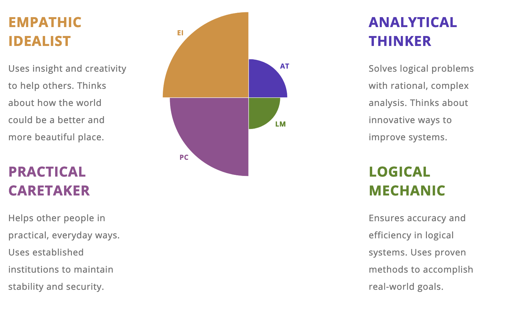
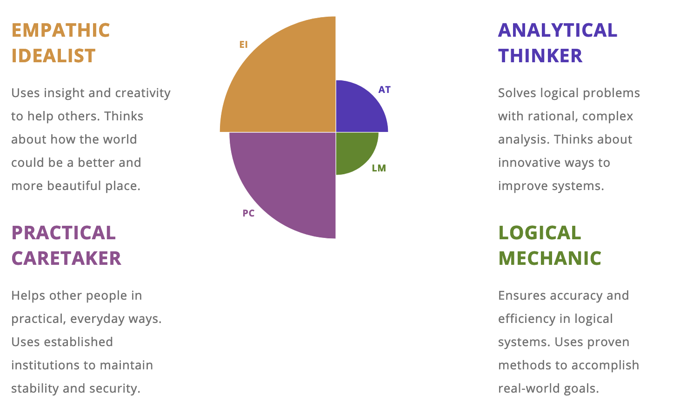

Overview
I work in a school and one of the issues we deal with daily is student absences, taking the roll and finding students on campus. My project idea is to develop a system for detecting user presence using RFID sensors, embedded inside doorways. The system would only detect RFID tags using a low frequency sensor to detect only the strongest signal from a tag that passes through the doorway. Using such a system could allow for the monitoring of the arrival and departure of users in buildings. With this system in place supervisors could use it to locate students on a school campus, assist in the taking of class rolls, and provide the means to check-in to certain locations which could then be further used to provide location-based services and information to users. An additional feature of this system is that it would also provide data for the purposes of contact tracing should a COVID outbreak occur within the company that uses it. The system has 4 main parts. The RFID Door sensor, RFID Tags for users, a management Application and a back-end database.
Motivation
A system such as this has many use cases across a wide range of sectors including corporate and education. In the education sector attendance is a key factor for students as well as being able to locate a person on a large campus quickly in an emergency. Attendance levels in Australia (which is the proportion of full-time students in Years 1-10 whose attendance rate in Semester 1 is equal to or greater than 90 per cent.) is at an average of 75% [1]. Using my system would help schools better track student attendance, and more easily identify the students who arrive at school in the mornings but disappear before classes start. This information can then be followed up by staff and parents improving the attendance level of students. For corporate environments, the sensors would provide an easy way for management to track the whereabouts of their employees and provide metrics for the analysis of employee movement in the offices. The product could also be adapted to museums where location specific information is displayed to users within proximity to displays.
Description
At its core this system would be able to display the location of its users on an interactive map. Users would be identified by the information contained in a database of RFID smartcards. This database could be internal or external by referencing a database using queries. The RFID smartcards need to be worn by the users, either around their necks using lanyards or attached to their clothing using name badges or retractable badge reels. There is nothing users need to do to use the system, it’s all automatic.
Implementation
- Wireless or Cable connected door sensors are integrated into the frames of doorways. If integration into the frame is not feasible the sensors can be mounted above the doorway on the inside and still perform the same function
- Users carry around an RFID tagged smartcard or an RFID tagged wrist-strap for identification
- When a user passes through a tagged doorway the system logs the time and date as well as the door identifier in a log. This would indicate the time the user entered and left a room.
- The users personal log is updated with a new location to indicate their presence inside the room. This presence is not updated again until the user enters another tagged doorway. In this way you can always see the last location the user was detected at.
- Alerts could be triggered by a user entering a building or doorway that they are not authorized to be in. This could be useful to prevent students from entering storerooms and server rooms.
- The administrative panel for the system would be able to pull up the logs for each doorway sensor as well as individual user for review. It would also contain an interactive map that can display all the users or a filtered view displaying only specified users. Much like the Marauders Map in Harry Potter.
- Can be used for Contact Tracing with the system able to display infected users and identify other users that have been in the same room.
Features
- RFID based Attendance Tracking for users
- Alerts system for unauthorized entry
- Interactive Map
- Fully auditable system log
- Contact Tracing built-in for COVID
- Location based services for displaying notices and alerts for users
Tools and Technologies
To create this project, it will need to be developed so that it is accessible by any company running on any platform be it Apple or Macintosh. For this reason, I would recommend using Flutter as the main development tool as its fully cross platform and can easily be used for both native, web and mobile apps. For the back-end database we can use any open-source database such as MySQL, Apache Hive or SQLite. Doors will need to be fitted with an RFID Reader connected to a power source and a network connection. The reader needs to use low frequency RFID so that it only detects tags passing under it and not in front of it. The RFID tags users wear will need to be a passive tag not requiring power. It just needs to be detectible by the low frequency readers in the doors. RFID tags can be embedded in swipe-cards and wrist-straps and these can be mass produced by any company. Transperth and Photocopier manufacturers can provide RFID based swipe cards for this purpose but they can also be purchased from companies such as Dynamic Gift Promotions in bulk
Skills Required
For the initial development a Raspberry Pi can be used when connected to a reader to read and process the data from the tags. Developing the software will require an experienced software developer who is able to code in both Python and Java as well as Flutter for the final code. I would recommend developing the management application first, with prototypes for the RFID sensors.
Roles for the successful launch of such a product would include the following:
- A Project Manager – For keeping the team on schedule and managing the budget
- Front End Developer – Responsible for the coding and development of the management application, user interface and manuals
- Back End Developer – Needs to be responsible for the coding and development of the data-layer and back-end database side of the project
- Software debugger – Needed for tracking down bugs and testing features during and after development
- Marketing Officer – For researching suitable companies who may be interested in our product and eventually selling the product to them
- Financial Investor – Provider of initial funds for creating the project. Can also be Crowdfunded using Kickstarter
Outcome
Should the project be developed it would be most useful to educational institutions, where duty of care is most important to the staff. The flexibility of the idea means that it can easily be adopted to other businesses as well, providing a useful tool that can be integrated into administrative tools. The project will provide a service that can reduce the strain caused by student absences as well useful metrics for businesses that require analysis of trends in their workforce. In terms of solving the original issue for educational institutions, that being the attendance levels being low, this software could help to raise the 75% statistic to a much higher level if it is adopted by a majority of schools in Australia. The potential benefits are promising and worth exploring.

 
